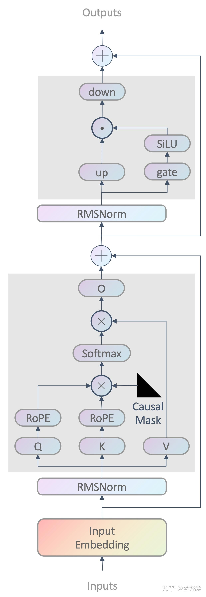

LLaMA 大语言模型
背景
自从openAI提出scaling law之后，大家发现很多模型都满足一定的scaling law，由于scaling law可以通过小规模的模型性能来预测大规模的模型性能，scaling law也变得越来越重视。J. Hoffmann 在《Training Compute-Optimal Large Language Models》论文给出了计算资源最优情况下的scaling law，这里的最优指的是训练。事实上训练最优并不代表推理最优，因为此时模型参数可能会比较大，但其实在小一点的模型上同样可以实现相同的性能。这就是LLaMA提出的初衷：LLaMA期望在小模型上训练更多的数据来达到更好的性能。
LLaMA-1 模型结构
LLaMA-1 模型结构特点如下：
- 使用RMSNorm
- 对$Q, K$ 使用RoPE旋转式位置编码
- 使用causal mask保证每个位置只能看到前面的tokens
- FFN部分使用SwiGLU 激活函数
- context window 长度为2048
下面依次来介绍一下这几个特点
RMSNorm
一般的layernorm公式如下所示：
$$
\hat{x}_i = \frac{x_i - \mu}{\sqrt{\sigma + \epsilon}}
$$
$$
\mu = \frac{1}{N}\sum_{i=1}^N x_i \quad \sigma = \sqrt{\frac{1}{N}\sum_{i=1}^N(x_i - \mu)^2}
$$
$$
y_i = a * \hat{x}_i + b
$$
其中$a$和$b$是element-wise仿射变换的参数，是否进行仿射变换是可选的，并且$a$和$b$是可学习的参数。$\epsilon$是一个大于0的参数，为了避免除0。
而RMSNorm就是在计算$\hat{x}_i$时不做去中心化，即，
$$
\hat{x}_i = \frac{x_i}{\sqrt{\sigma + \epsilon}}
$$
RoPE
LLaMA-1模型使用旋转位置编码（Rotary Positional Embeddings，RoPE），来代替绝对位置编码。
SwiGLU 函数
这里打算介绍一下集中激活函数的演化
ReLU
在标准的Transformer网络里，FFN层用到的激活函数是$ReLU(x) = max(0, x)$。那么两层神经网络的输出就是：
$$
FFN(x, W_1, W_2, b_1, b_2) = W_2 (\text{Gelu}(W_1x + b_1))+ b_2
$$
GeLU
GeLU，即高斯误差线性单元（Gaussian Error Linear Unit），其数学公式为：
$$
GeLU(x) = xPr(x) = x\Phi(x) = x \int_{-\infty}^x \mathcal{N}(X=t|0,1) dt
$$
其中$\Phi(x)$，$\mathcal{N}(X=t|0,1)$是标准高斯分布的累计函数和概率密度函数。
上面这个函数是没有显示解的，只能近似等于：
$$
GeLU(x) = 0.5x\left[ 1+ \text{tanh} \left( \sqrt{2/\pi}(x+0.047715x^3) \right)\right] = x \times \sigma(1.702x)
$$
相较于 ReLU 等激活函数，GELU 更加平滑，有助于提高训练过程的收敛速度和性能。
Swish
论文《Swish: a Self-Gated Activation Function》提出了Swish，这也是对带有非零负值梯度的ReLU平滑版本。
$$
Swish_{\beta}(x) = x\sigma(\beta x) = \frac{x}{1 + \text{exp}(-\beta x)}
$$
其中$\beta$ 是一个常数或者可学习的参数。当$\beta = 0$时，$Swish_{\beta}(x) = x$，当$\beta = 1$时，$Swish_{\beta}(x) = x\sigma(x) = SiLU(x)$。
GLU
GLU（Gated Linear Units）其实不算是一种激活函数，而是一种神经网络层。它是一个线性变换后面接门控机制的结构。其中门控机制是一个sigmoid函数用来控制信息能够通过多少。
$$
GLU(x, W, V, b, c) = \sigma(xW+b) \otimes (xV + c)
$$
其中$\otimes$ 是逐个元素相乘。
SwiGLU
说到这里其实已经很明朗了，SwiGLU就是Swish 函数加上GLU，即
$$
SwiGLU(x, W, V, b, c) = Swish_{\beta}(xW+b) \otimes (xV + c)
$$
在LLaMA-1模型中，实际使用的FFN为：
$$
FFN_{Swish}(x, W, V, W_2) = SwiGLU(x, W, V)W_2
$$
$$
SwiGLU(x, W, V) = Swish_{\beta=1}(xW) \otimes (xV) = SiLU(xW) \otimes (xV)
$$
LLaMA-2 模型结构
LLaMA-2 基本上沿用了 LLaMA-1的模型结构，只不过把MHA换成了GQA，来较低推理时的显存占用，MHA，MQA，GQA具体可以参考：MHA, MQA, GQA